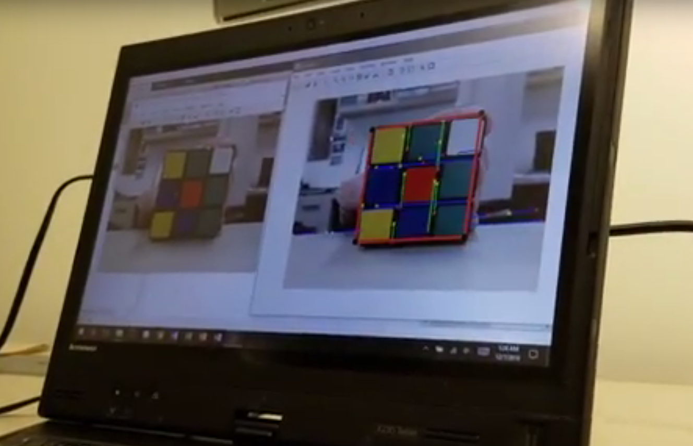

6.810 Engineering Interactive Technologies (fall 2018)
OpenCV Lab
work in progress
Here's what we are building today:
We are going to write a piece of Computer Vision software that extracts the position of the colored squares from each side of a Rubrik's cube and then solves the cube by giving you instructions on how to rotate each row/column.

Your job is to write the color-extraction with OpenCV.
We will give you code for the rest (i.e. the logic for solving the cube).
Where to place your code
In the code, you will find a function XX.
Please insert your code into this function.
Reading a Camera Image
Before we can read the live camera feed, we first have to initialize the camera like this:
/* Initializing the Camera * /
camera_port = 0 // your built in camera is typicall 0, any extra camera on USB is 1, 2 etc.
camera = cv2.VideoCapture(camera_port) // this returns the camera object and opens the video channel
Next, we can read frames from the camera like this:
/* Initializing the Camera * /
read image code
display image on screen
add a wait so it doesn't fly
ret, frame = camera.read()
cv2.namedWindow('image',0)
cv2.resizeWindow('image',800,600)
We need to add the wait statement for ~5ms otherwise your computer will stall and not be able to take any key input from you.
key = cv2.waitKey(5)
Doing an Action on Key-Press
It is often useful for debugging to do some action on keypress (e.g. quit the program, save a specific image from the camera).
Here is some code to e.g. quit your program on keypress of 'x'.
/* Doing something on Keypress * /
if key == 120:
break
}
Writing Frames to Disk
It is often a good idea to start developing a program on a single frame, aka a still image rather than trying to solve it right away with a live video stream, e.g. a single image in which you hold the rubriks cube into the camera.
Expand your code to save a single frame to disk on keypress of 'c' (capture).
/* Code for saving an image * /
/* frame write to disk * /
if key == 99:
img_name = "opencv_frame.png"
cv2.imwrite(img_name, frame)
RGB, CMYK, and HSV Color Spaces for Color Tracking
RGB and CMYK are the most common color spaces.
RGB is used for on-screen images, while CMYK is used for printed content.

Your camera image is in RGB.
Is RGB a good color space for tracking color?

RGB encodes color in 3 different channels: R, G, and B.
For instance, the light orange in the image below consists of 227 Red parts mixed with 151 green parts and 83 blue parts.
Even just slightly changing the lighting situation in the room, will result in a big mess, i.e. all of these numbers change!
As you can see below, on a more sunny day, the same object might now be more saturated orange and all the numbers change.
Thus, it will be very difficult to color track an object (such as the Rubrik cube squares) using RGB color space!

Now there is another color space called HSV (Hue, Satuation, Value).
This color space is much more suitable for our needs, since the hue-channel encodes all the different colors in a single channel (see below).
The saturation channel contains all the different saturated versions of this color and the value channel contains all the different brightness versions of this color.

Thus, to track a specific color in HSV, we can simply select the range in Hue (e.g. 60-140 for green), and then include all saturations (0-255) and all values (0-255) of that color.
This allows us to track color independent of the current light situation in the room.
/* Code to convert your image into HSV color space */
hsv_image = cv2.cvtColor(frame, cv2.COLOR_BGR2HSV)
If you display this image on your screen (make sure to use the hsv_image variable in the showImage() function), it will probably look super weird because your RGB display cannot display an HSV image (different color space).

Thresholding an Image
Thresholding an image basically means going over every single pixel of an image, then for each pixel in the image the program asks: Is the pixel value above a certain threshold? If the answer is yes, the pixel is colored white, if the answer is no, the pixel is colored black.
The same principle applies when you use a range: If the value of the pixel between the lower and upper bounds of the range, then color it white. If it is outside the bounds of the range, color it black.

Here's the code for this:
*/define lower and upper range, e.g. for color blue*/
lower_blue = np.array([h_min,s_min,v_min]) // e.g. 100,0,0
upper_blue = np.array([h_max,s_max,v_max]) // e.g. 140,255,255
*/threshold the image using the lower and upper bounds*/
threshold_image = cv2.inRange(hsv_image, lower_blue, upper_blue)
Let's start by just searching for one of the Rubrik cube's colors, such as red.
Once you have this working, you can later extend your code to other colors (but we recommend moving on for now and doing one color end-to-end first.
Adding Sliders for Setting Threshold Values
Rather than hard-coding the values, it is often a good idea to have some sliders to define the lower and upper bounds.
Here is how you can add some sliders to set h_min, s_min, v_min, h_max, s_max, v_max:
*/adding sliders */
# nothing
def nothing():
pass
cv2.createTrackbar('h','image',25,179,nothing)
cv2.createTrackbar('s','image',50,255,nothing)
cv2.createTrackbar('v','image',50,255,nothing)
cv2.createTrackbar('H','image',35,179,nothing)
cv2.createTrackbar('S','image',255,255,nothing)
cv2.createTrackbar('V','image',255,255,nothing)
Find Contours
Ok great, now you have a black and white image, but its just a soup of pixels.
How can we find the contours?
For this, OpenCV offers a handy function:
*/return contours */
image, contours, hierarchy = cv2.findContours(threshold_image,
cv2.RETR_TREE,
cv2.CHAIN_APPROX_SIMPLE)
In this example, the variable contours will be a list of paths, with each path being a contour found in the thresholded image (i.e. for every white blob).

Below you can find the arguments of the function explain.
The cv2.RETR-TREE allows you to find out the hierachy of contours, e.g. is one contour inside some other contour. We don't really need this here since all the rubrik cube squares are right next to each other. However, we could use this function later to cancel out noise (e.g. small contours found inside some larger contour are probably noise).
The cv2.Chain_approx_simple allows you to decide how many points for each contour you want. If you do not approximate the contour, the path object will be very large. For our case, getting an approximation is totally sufficient, so we use it here.

Drawing Contours on an Image
Next, we can draw the returned contours in the image, so we actually see something.
/* iterate over contours*/
for contour in contours:
cv2.drawContours(frame, contour, -1, (0,255,0), 3)
Filtering Noisy Contours
If you displayed your contours, you probably saw a lot of noise coming up.
Since we are looking for large square shaped area, we can dismiss contours that are too small.

Since it's hard to guess the area, add a slider to your program that you can use to try different contour sizes for filtering!
Once you are done, here's what you should see:

Fitting a Square around the Contour
The contour is just a path and thus it can have any shape and often has a noisy outline.
We can fit a square around each contour and then use the square to compute the center point (i.e. location of the square within the image).
/* fitting a square around the contour */
x,y,w,h = cv2.boundingRect(contour)
//add line that queries the center
We can now also draw the square into the image and add the coordinates to it:
cv2.rectangle(frame,(x,y),(x+w,y+h),(0,255,0),5)
cv2.putText(frame,textstring,(int(x+50),int(y)),
cv2.FONT_HERSHEY_SIMPLEX, 0.5,(255,255,255),1)
This should give you this image:

Extend Code to Work with all Colors on the Rubrik Cube
Now extend your code to work with all colors of the Rubrik cube.
When you are done and you have the position of all squares, fill the position into this array (to come) so the rest of the code can provide you with the solution.
Upload your Code and a Video of yourself solving your Cube to Gradebook
Upload your solution here.
camera = cv2.VideoCapture(camera_port) // this returns the camera object and opens the video channel
display image on screen
add a wait so it doesn't fly
ret, frame = camera.read()
cv2.namedWindow('image',0)
cv2.resizeWindow('image',800,600)
if key == 120:
break
}
/* frame write to disk * /
if key == 99:
img_name = "opencv_frame.png"
cv2.imwrite(img_name, frame)
hsv_image = cv2.cvtColor(frame, cv2.COLOR_BGR2HSV)
lower_blue = np.array([h_min,s_min,v_min]) // e.g. 100,0,0
upper_blue = np.array([h_max,s_max,v_max]) // e.g. 140,255,255
*/threshold the image using the lower and upper bounds*/
threshold_image = cv2.inRange(hsv_image, lower_blue, upper_blue)
# nothing
def nothing():
pass
cv2.createTrackbar('h','image',25,179,nothing)
cv2.createTrackbar('s','image',50,255,nothing)
cv2.createTrackbar('v','image',50,255,nothing)
cv2.createTrackbar('H','image',35,179,nothing)
cv2.createTrackbar('S','image',255,255,nothing)
cv2.createTrackbar('V','image',255,255,nothing)
image, contours, hierarchy = cv2.findContours(threshold_image,
cv2.RETR_TREE,
cv2.CHAIN_APPROX_SIMPLE)
for contour in contours:
cv2.drawContours(frame, contour, -1, (0,255,0), 3)
x,y,w,h = cv2.boundingRect(contour)
//add line that queries the center
cv2.putText(frame,textstring,(int(x+50),int(y)), cv2.FONT_HERSHEY_SIMPLEX, 0.5,(255,255,255),1)